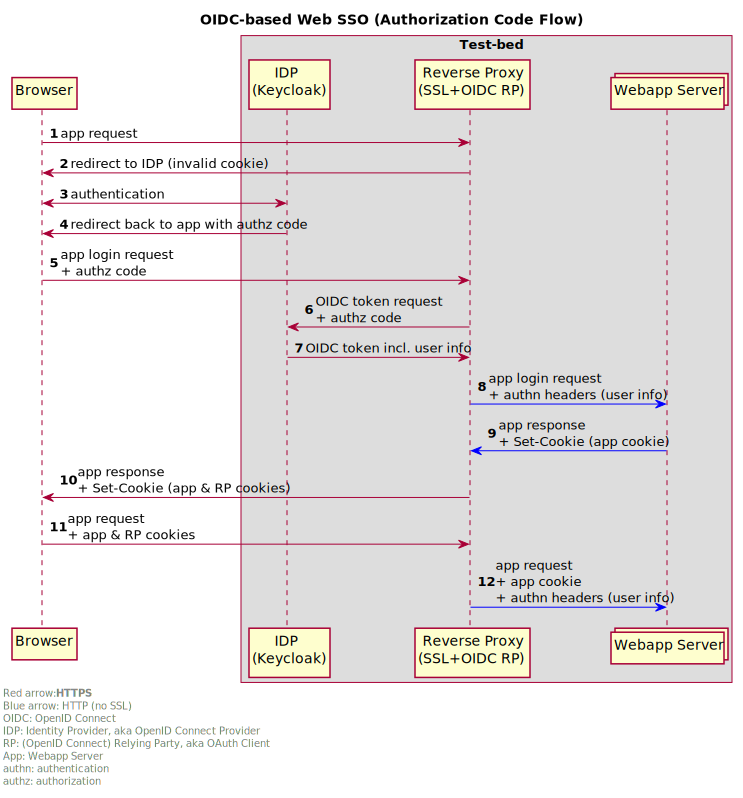

4. The Test-bed for developers and system administrators
This chapter discusses the Test-bed from a technical perspective, and is aimed at skilled IT persons, such as system administrators and developers. It is presumed that you are already familiar with the previous chapters.
- A system administrator, in the current context, is responsible for installing the Test-bed on their local network or in the cloud, and making sure that all the solution and simulation providers can get access to this network as well. This task is discussed in the use case 'Installing the Test-bed'.
- A developer would be tasked with connecting an existing Solution or simulator to the Test-bed. Besides the direct coupling, allowing their tools to receive and publish messages, it most likely also involves translating existing messages to their own format. Finally, in case you are connecting a simulator, you also need more detailed information about the time management in the Test-bed.
Watch the following animation (also available at https://player.vimeo.com/video/299681354) to get a better understanding of what is going on.
4.1 Use case: Installing the Test-bed
The previous chapter already explained how to setup the Test-bed. More detailed information about how to run the Docker-compose environment can be found here, which also contains many example configurations as applied during the DRIVER+ Trials. Alternatively, use the GUI to build your own Test-bed environment in Docker.
System administrators are also responsible for setting up the local network and firewall settings, such that all solution and simulator providers have access to the local intranet as well as extranet.
In particular, it should be considered that some providers make heavy use of the network, e.g. to download maps, stream video, or access external computer clusters. If that is the case, consider using a throttling service in your network, so one provider does not claim all the network traffic.
More directly related to the Test-bed, however, is the connection of all solutions and simulators: are they connected correctly to the Test-bed, do they run without errors, are they subscribed to the correct topics, and do they publish to the expected topics, are some of the questions that the Admin tool can answer for you. In addition, the admin tool makes sure that all message schemas are available. And when everything is in place, the actual Trial can start. Finally, the admin tool offers a convenient interface to all the other technical Test-bed services, such as the REST services, Topics UI, Schema Registry, Kafka Connect, etc.
From then on, the system administrator only needs to check whether the Test-bed does not experience any issues, like disconnected applications.
4.2 Use case: Integration process for a single solution or simulator
Within DRIVER+, a dedicated integration process for solutions is described in a separate document, D934.21, Solution testing procedure. This section describes how a developer can proceed to integrate a solution or simulator with the Test-bed reference implementation.
This use-case is executed during the integration of a single solution or simulator into the Test-bed. It does not apply to the testing of multiple applications, and should already have been successfully performed before the application is tested in a larger context with multiple solutions and simulators.
- Developer starts up the Test-bed and the Admin Tool, or uses a Test-bed available online. When running locally, a good place to start is to checkout the local docker-compose.yml with the following command:
docker-compose up -d. Next, access the Admin tool and initialize the Test-bed, so all schemas are made available in the schema registry. - Developer selects one of the existing adapters, and runs its examples: each adapter has a producer, that sends messages, and a consumer, that listens to them. Adapters are available in multiple languages, each adapter is published separately as a library or package, and contains an example project explaining how to use it: Java, C#, JavaScript/TypeScript/Node.js and separate example project, Python and REST. The Admin Tool shows whether the connection is established successfully. In the Kafka Topics UI, you can inspect the messages that you've sent.
- Developer uses the selected adapter, integrates it into his application, and connects to the Test-bed. Integrating is simple: when publishing information, create the message (object) and use the adapter's publish method. For receiving messages, just add a handler when subscribing to a topic. This handler is invoked when a new message is received.
- Developer defines the input/output AVRO message schemas and topics based on the running test-bed. Many popular schemas for CAP, EMSI, MLP, GeoJSON etc. have already been defined in our AVRO-schemas repository and should be re-used if applicable.
- In case your message format is not available, the developer needs to create a new one and register it with the Test-bed's schema registry. You can do that manually, or alternatively, the adapter will do this for you. The registration procedure is a bit different for each adapter. Please consult the adapter's documentation.
- In case your information is available, but in a format that the application does not support, you can create a gateway service to translate messages in one topic, e.g. MLP, to another message format, e.g. GeoJSON, and consume the latter. See the paragraph on the Gateway service below.
- To receive messages, the developer uses the example project's producer or starts up the Kafka replay-service to send messages one-by-one or replay a logged sequence of messages. For more detailed information, see the Replay service section below. To log the messages in a topic, you can use the Kafka-topics-logger or the Kafka topics UI, which is a default part of the Test-bed, to save them. This is, for example, useful when you need to integrate with an application that does not run locally, e.g. when your COP tool needs to consume messages from a simulator that you do not have running locally.
- In case the integrated application also sends messages, Developer can use the Kafka topics UI in Figure 19 to verify that they were created and published to the Test-bed successfully.
- When your message uses time, the developer needs to query the adapter to get the local Trial time. The Test-bed's time-service manages the Trial time, and you can read more about it below.
Kafka Topics UI
The Test-bed includes Landoop's Kafka topics UI service (see Figure 19) to inspect all the message topics that exist (default location http://localhost:3600). For each topic, you can see inspect the messages that were sent. This is useful to verify your success in sending a message to the Test-bed, and to check the exact message contents.

AVRO Schema Registry
The Test-bed also includes Landoop's AVRO schema registry service (see Figure 20) to inspect all the available schema's (default location http://localhost:3601). As each message topic only has one schema, every message send to a topic needs to comply with that schema too. Also, in case a developer is creating new messages, these schemas must first be added to the schema registry, either manually or via one of the existing adapters.

REST service
The Test-bed contains a REST service: in case a (legacy) solution is not adaptable, or the solution is developed in a programming language that is not currently supported, it may be necessary to interact with the Test-bed via the REST service. In that case, the REST service would be installed and run locally, so the solution that connects to it is still clearly visible in the admin tool as a separate client.
Replay service
Connecting to the Test-bed is needed to share information that you produce, or to consume information from others. While working on integrating your own simulator or solution, however, it is very likely that there are no other simulators or solutions running. When sending messages, you can use the Kafka topics UI to verify that your messages have been delivered. And it is the purpose of the replay service (see Figure 21) to present you with messages to consume. This can be either a single message or a sequence of messages.
For example, assume that you as a developer are tasked to integrate a COP solution. It needs to consume the locations of the rescue vehicles, which are normally generated by a simulator. However, it is a commercial simulator that you do not have. In that case, you request the simulator to run a scenario and publish it to the Test-bed. Next, log all the messages to file using our Kafka-topics-logger or via the Kafka Topics UI. This log file is subsequently sent to the COP solution developer, who can replay it using the replay service, so the developer can work as if the simulator was present.

4.3 Use case: Pre-trial integration testing
The procedure for testing multiple solutions and simulators before an actual Trial with participants is performed, is similar to the procedure for testing a single application. It is assumed that the single solutions and simulators have already been successfully integrated with the Test-bed, and all required message schemas are defined.
- System administrator starts up the Test-bed and the Admin Tool, or uses a Test-bed available online. If not done already, all required schema's are registered by the Admin tool with the schema registry.
- System administrator inspects the Admin Tool and verifies that all required solutions and simulators are available and running online without errors. Via the Admin Tool, solutions and simulators may be invited to subscribe to certain topics.
- System administrator starts up the Trial-Management-Tool (TMT), loads the Trial scenario, and initializes it. The Test-bed's time service updates the fictive Trial time and state, and every application that uses time should reflect that.
- System administrator selects a Trial scenario and creates a new session in the TMT, either from the beginning or at another point in time, e.g. where issues were discovered. The time-service will update the fictive time accordingly.
- System administrator resets the Trial scenario and stops the session (so the AAR can finalize the session, and clearly mark all messages that belong to the current session).
4.4 Gateways for translating messages
As a developer, you may be confronted with message formats you need to consume, but do not support natively in your application. In that case, you can either:
- Adapt your application to support these message formats natively.
- Create a gateway service which translates messages from one message format to a format that your application does understand.
To create such a gateway service is simple: you consume messages from one message topic, convert them, and publish them on another topic. The validation services follow the same approach, and several dedicated services are already available within the DRIVER+ space on GitHub.
For example, the Twitter-gateway translates messages from the Test-bed to Twitter, ready to be consumed via Twitter, or the XVR-GeoJSON-gateway converts XVR simulator messages to the GeoJSON standard.
4.5 Large file service (LFS)
Kafka and AVRO are ideally suited for smaller-sized messages, i.e. typically not exceeding 1Mb compressed. However, a typical flooding file or a drone video file may well exceed 1Gb of data. Instead of sending these large messages, adapters can upload a file to the Large File Service (LFS) and send out a large-data message sharing its location. Alternatively, the URL may be embedded in a standard document, like a CAP message.
The LFS currently supports two types of messages:
- Public messages: they can be browsed in a folder like structure.
- Private messages: although not secret, they are shared via an obfuscated URL, which is very hard to guess, similar to services like wetransfer.com, so you get security through obscurity.
In most adapters, there are facilities to support the LFS: for example, the adapter can automatically send a notification message (large-data-message) after successfully uploading a file to the LFS.
4.6 Data services and data sets
Within a Trial, we need to create a virtual environment where we can safely experiment. This virtual environment is created using data, such as maps, census data, height data, power lines, cell towers, hospitals and care providers, etc. As it is a lot of work to create such a rich data environment, the effort should be shared among the Trial owners, solution and simulator providers. Not only to reduce the workload for a specific organisation, but also to make sure that all parties use the same data. Otherwise, a traffic simulator may use a different roadmap than the simulator that provides a 3D environment, and some roads may be blocked by buildings.
In many cases, real-world data is used, optionally enriched with scenario-specific information. Sometimes, a virtual environment is created, based on real-world data but with altered names.
So in order to share all this gathered data, the Test-bed offers two types of services:
- Docker volume images to store all this information together, so the data can be easily shared. A Test-bed user can simply pull the volume image from the Docker hub to have all data instantly available
- Data services, to share this data with all users, e.g. there is an MBtiles service to offer map images to COP and COP-like tools, or a WMS service that translate Test-bed messages to WMS map layers, which makes the information available to legacy systems too.
Security is yet another reason to have these data services and data sets as part of the Test-bed. Not all Trials have open access to the Internet, but they still need access to this kind of data.
4.7 Time management
A Trial typically is not performed in real-time: either because the incident occurs at night, and people prefer to Trial during working hours, because of the limited availability of participants, or because it would simply take too long. An example of the latter is a flooding incident, which can start days before any flooding actually occurs, so you need to compress the scenario to normal working hours.
Since a Trial can encompass several time zones, the trial time is always communicated in UTC (Universal Time Coordinates). Depending on your application, you may need to convert this to local time.
Within the Test-bed, therefore, the trial time (a.k.a. Trial time or fictive time) is controlled via the time service (see Figure 22) using two types of messages: one for controlling the time, and one for informing adapters about the current trial time.
As a developer, you do not need to interact with these messages directly, since:
- Every adapter has a time interface to get the current trial time. Even as a solution developer, you should also use this time to timestamp the messages that you send. For example, if inside your message you refer to a particular time, always base it on the trial time.
- Every adapter has a state describing the current scenario phase, which you can optionally use during the integration:
- Idle: no scenario has started. The time interface returns the system time (in UTC).
- Initialized: the scenario is ready to be started. All adapters will receive the scenario start time, and can use this to initialize their service.
- Running (started or paused): the trial time is moving forward, either at normal speed (1x) or slower/faster than normally. In case the scenario is paused, the current trial time is still actively being distributed, but does not progress (speed is 0).
- Stopped: The scenario stops, and the simulation time is no longer being updated.

NOTE: Even when you do not interface with the time messages, you still must use the time interface when you want to publish a message with a timestamp inside. This timestamp should use the current trial time. Similarly, in case you display the 'actual' time in your user interface, please also use the current trial time.
System time versus trial time
In Trials executed in the past, the operating system (OS) time was also adjusted to match the trial time. The advantage was that if you would check the time in your status bar, it would display the current trial time instead of the real time. Although this is straightforward to do, your OS does not like it, as it will generate files in the past or future, and may mess up your system. Especially when the scenario is paused. That is why the current Test-bed does not require you to synchronize your system time to the trial time.
A word about HLA and DIS
Within the Modelling & Simulation community, especially for military use, there are two simulation standards, HLA (High Level Architecture) and DIS (Distributed Interactive Simulation), which are the norm. The reasons why we did not use these standards, not even for the CSS, are:
- They are used for connecting simulators to each other, not for connecting solutions to simulators nor solutions to other solutions.
- Their message format is fixed: if you want to send other information, you have to 're-purpose' existing fields, which is not considered a best practice. Also, they have no support for any CM standard.
- Both have a steep learning curve.
- HLA and DIS form a very small community, so it is difficult to hire people with this knowledge, and you typically have to train general software engineers by yourself. Second, it is difficult to find solutions for a particular problem on the Internet.
- HLA and DIS expect everyone to use Java, C++ or C#, and there is less support for the 'newer' programming languages, like JavaScript, Python, etc.
- HLA requires a run-time infrastructure, which is a kind of test-bed: there are two commercial providers, but both their products are expensive. Although there is one open source version, it is feature incomplete and not well maintained. Furthermore, even though different products should be interoperable, they are not, and they cannot be mixed easily.
That is why this Test-bed is using open source software, so it is easy to find:
- Open source tools to support it, or to connect to it, in many programming languages.
- Answers to questions.
- People that can use it and solve issues themselves.
- New schemas for your message, or create them when needed.
- And there is no financial hurdle preventing adoption.
Even though the Test-bed does not use HLA or DIS internally, there are many simulators that provide a HLA or DIS export, and that can be useful for a Trial. In those cases, a HLA or DIS simulation environment can be created, as is done normally, including a gateway service to bridge the gap with our test-bed: typically, such a gateway has an HLA/DIS connector to retrieve information from the HLA/DIS side, and a subset of the information is published in the CSS. And vice versa. Even though this kind of integration if suboptimal, in practice, this is not really noticeable.
4.7 Security
Security is an integral part of the Test-bed: although in most crisis management organisations, practitioners consider that safety prevails anyhow, often to such an extent that security never comes into the picture or merely as a measure of last resort. However, a lack of security controls in crisis management solutions from the ground up may have a disastrous impact on crisis management decisions, operations and, in the end, on people's lives; therefore, DRIVER's test-bed has security by design. Our primary focus is on the security of information exchanged in CIS and CSS topics, because this is where critical or sensitive information flows, leading to three information security objectives:
- Integrity of information exchanged in CIS and CSS topics: messages should not be tampered without notice.
- Authenticity of information exchanged in CISS and CSS topics: the origin of the messages published to certain topics should be authenticated, and, by extension, only legit/trusted users may publish on certain topics.
- Confidentiality of information exchanged in CISS and CSS topics, such as critical infrastructure information or personal information (beware the GDPR): only authorized Solutions (adapters) may have access to the messages published to certain topics.
To achieve these objectives, the Test-bed includes an access control framework in which both system administrators and developers have a role to play.
Authentication
The CIS/CSS Kafka broker enforces SSL/TLS transport security with mutual authentication. This means that adapters are required to authenticate with SSL client certificates. Developers shall get such SSL client certificates from the Admin Tool, with the approval of a system administrator. The subject name of the certificate must uniquely identify the adapter within the organization. More specifically, the subject name must include an Organization name (O) identifying the Organization that owns the Solution or Simulator, and a Common Name (CN) identifying the Solution or Simulator instance within that organization. The Admin Tool uses a Certificate Authority (CA), provided with the testbed in the backend, to issue those certificates.
Developers then configure their adapters with those certificates as client certificates (key store), the aforementioned CA's certificate in their truststore (trusted CAs) in order to authenticate the broker (using a certificate issued by that same CA as well), and recommended TLS parameters according to current best practices: TLS v1.0 or later (as of writing), strong cipher suites, etc. Developers must take good care of protecting the confidentiality of the private key associated to their client certificate according to best practices and the risk level. If the key is compromised, authentication is useless. Developers must report any compromised key to system administrators so that the certificate be revoked.
By default, the CIS/CSS broker trusts only that backend CA for client certificates. If developers wish to use client certificates issued by another CA, system administrators may grant their wish by modifying the broker's SSL configuration. This change consists to add the other CA's certificate to the broker's SSL truststore (JKS) and restart the broker service.
Once all adapters are properly configured by developers for SSL client authentication, they are able to connect to the secured CIS/CSS broker and at least access public topics such as system_ topics.
Authorization
For stronger security, whenever trial owners want to protect specific CIS/CSS topics, system administrators shall enable topic authorization. By default, this test-bed security feature is disabled, i.e. all authenticated users (according to previous section) have access to all topics. System administrators enable topic authorization by using an extra Docker Compose file that extends the default one with authorization enforcement components.
Once enabled, access to any topic is denied by default, except for certain public topics such as system_ topics. This means that for other topics, access must be granted explicitly by system administrators. More specifically, for each sensitive topic X, the system administrator shall configure the topic access policy via the Admin Tool. A topic access policy is set on a specific topic X and consists of a list of access rules. Each access rule consists of:
- Authorized subject name, as in the adapter's SSL certificate (a.k.a. Kafka client ID in this case), OR Kafka consumer group ID;
- A list of permissions; each permission is a couple (ACTION, bool), where ACTION is the action considered on the topic (in Kafka API model), e.g. READ (subscribe a topic) or WRITE (publish on a topic), and the Boolean bool is true if and only if the action is permitted (positive rule), else denied.
If a consumer group ID is used as the first item (instead of subject name), the system administrator must also declare the corresponding group memberships in the Admin Tool, i.e. who is authorized to join this group.
In order to improve performances, system administrators can enable the authorization decision cache (disabled by default) in Kafka's configuration via Docker Compose environment variables. This allows Kafka (the Kafka authorizer in particular) to cache decisions to avoid requesting the remote PDP every time. The downside is that changes to the topic access policies that occur in the remote PDP during the cache interval may be ignored.
Single-Sign-On (SSO)
While securing the CIS/CSS Kafka topics is important, the Test-bed also exposes several web clients, such as the Admin Tool, the TMT, AAR, and OST. Especially the AAR needs to be protected, otherwise all exchanged messages can be inspected openly, and securing the topics is useless. If the Admin Tool, TMT or OST are left unprotected, outsiders can, even unwittingly, disrupt a Trial, for example when trying out some functionality or stopping a scenario session. Therefore, the web clients need to be protected too. One approach is to add authentication and authorization to each of these services separately, but this would imply that Trial staff and developers need to manage multiple users accounts. Instead, the Test-bed makes use of a so-called Single-Sign-On setup based on the open source Keycloak service, so Trial staff only need one username and password to access all Test-bed services, as explained in the high-level diagram below.

4.8 Online Test-beds
As mentioned in section 4.3, it is possible to make use of an online test-bed that is hosted in the cloud. This serves as an alternative to hosting a test-bed yourself and is useful for hosting the Test-bed as a service and integration testing: whenever two or more parties wish to test their integration via the test-bed, they can request a cloud-hosted test-bed that is available within a few minutes. All parties can then remotely connect to this test-bed, without requiring any prior setup and configuration. Additionally, during several Trials, some solutions required the use of an externally hosted backend service that needed to communicate with the Test-bed. In that case, an online Test-bed is also useful in order for the backend service to access the Test-bed so the Trial organisation does not have to open up their firewall for allowing access.
The current Test-bed cloud consists of four servers configured as a Docker Swarm which allows various Test-bed compositions to be hosted in parallel. So not all running instances need to be the same, as the Trial requirements may vary. Docker swarm allows any Test-bed docker composition to run on the Docker Swarm servers. Each Test-bed can make use of one of the ten available host-names for temporary online test-beds: https://tb1.driver-testbed.eu to https://tb10.driver-testbed.eu.
4.9 Reverse Proxy for Test-beds
Optionally the Driver Test-bed can be configured to work with a Reverse proxy like Nginx, Traefik or Redbird. This has several advantages:
- The Test-bed Services (i.e. Topic UI, Schema UI, etc) are not separately exposed on their own port, but via a relative URL on a shared proxy that can be reached via a configurable hostname. So instead of exposing the Topics UI at
http://hostname:3601and the Schema UI athttp://hostname:3602, they can be exposed athttp://hostname/topics-ui/andhttp://hostname/schema-ui/respectively. They will then both share the same HTTP endpoint athttp://hostname. - The shared HTTP endpoint can be secured with an SSL certificate, like the free certificates created by lets-encrypt, which all above-mentioned reverse proxies support out-of-the-box. Because all web services in the test-bed use the same reverse proxy, securing this reverse proxy entry point will secure the HTTPS traffic for all services behind it without requiring any configuration on the test-bed services.
- Reverse proxies monitor and log requests, and therefore allow for tracing and monitoring health and load on services in the test-bed.
As an example, Traefik is built to integrate seamlessly with Docker Swarm. For setting up the Test-bed with Traefik these instructions are followed. Traefik runs in a separate container, on a shared Docker network with the Test-bed containers to allow routing of traffic to the Test-bed services. It listens to events from Docker stating that a container is started. Metadata provided on start-up of the container (labels, see here) specifies how the service should be exposed by Traefik. For example, Traefik can expose the service at a specified hostname (domain or subdomain) and at a specific relative path. Moreover, the URL may be manipulated (for example strip the relative path) to allow compatibility with the services. Whenever a new service is hosted on a specified hostname, Traefik automatically ensures that a valid lets-encrypt certificate is present or requested.
There are two beta Test-bed compositions available for usage with Traefik on the test-bed repository traefik branch:
- A composition for a local test-bed. This allows running the test-bed on your local machine. The external hostname, Kafka broker port, and Schema Registry port can be specified in the
.envfile. - A composition to run in the cloud using Docker swarm. This is built for running on the TNO-hosted cloud servers. The external hostname, Kafka broker port, and Schema Registry port must be specified using ENV variables
TESTBED_HOST,BROKER_PORT, andSCHEMA_REGISTRY_PORTrespectively.